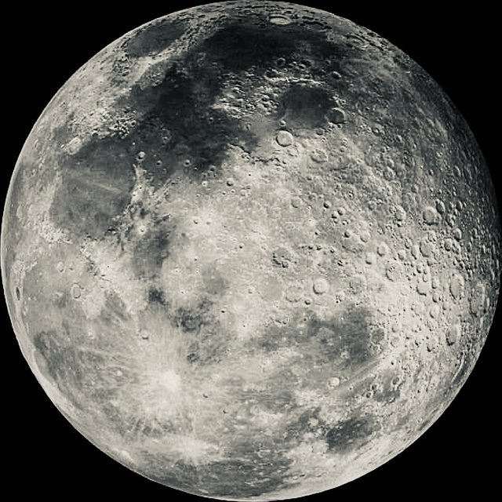
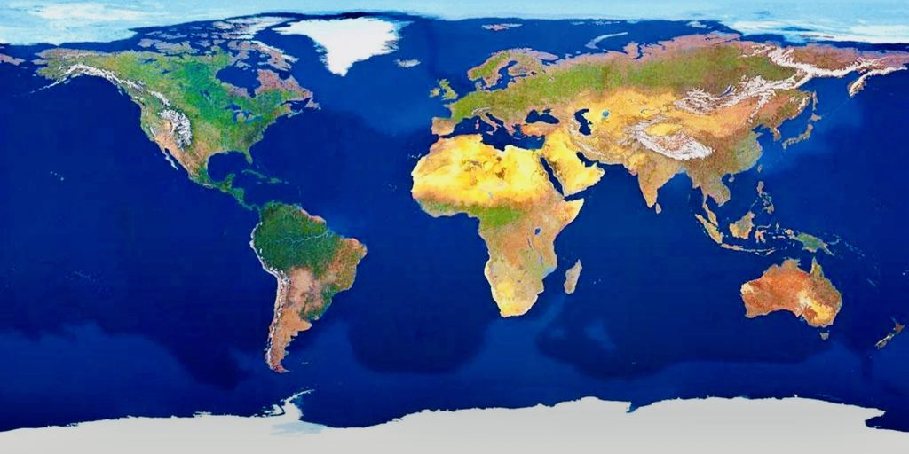

Club Astro
Explorer le ciel depuis Chemillé-en-Anjou, de la Lune à la galaxie.
Ciel de Chemillé
Soleil, Lune, météo, point de rosée, planètes et créneaux d’observation pour ce soir.

Pleine Lune · Chemillé
Heure exacte de la prochaine pleine Lune, compte à rebours et phases des 14 prochains jours.
Phases de la Lune
La Lune dans le temps : accélérez le cycle, remontez le temps, hémisphère nord ou sud.
Les planètes en temps réel
La Terre et les sept autres planètes à leur position d’aujourd’hui.

Jour et nuit sur la Terre
Un globe avec l’ombre du Soleil, les saisons et l’heure solaire de n’importe quel point.
Voyage vers Mars
Du lancement à la mise en orbite autour de Mars, sur la prochaine fenêtre de tir.
Notre place dans la Voie lactée
Le système solaire dans la galaxie, de dessus et de profil, sur 4,6 milliards d’années.
Échelle de l’univers
Un zoom de la longueur de Planck à l’univers observable.
Les modules météo de « Ciel de Chemillé » ont besoin d’une connexion Internet.